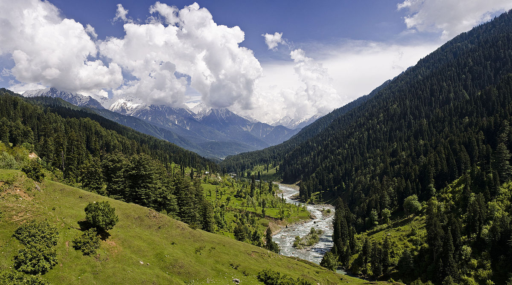

|
|
Best Place In India
Jammu & Kashmir
Jammu and Kashmir is a region administered by India as a union territory and consisting of the southern portion of the larger Kashmir region, which has been the subject of a dispute between India and Pakistan since 1947, and between India and China since 1962.The Line of Control separates Jammu and Kashmir from the Pakistani-administered territories of Azad Kashmir and Gilgit-Baltistan in the west and north.
Places in Jammu & Kashmir
1.Dal-Lake
 |
Dal is a lake in Srinagar (Dal Lake is a misnomer as Dal in Kashmiri means lake), the summer capital of Jammu and Kashmir. The urban lake, is integral to tourism and recreation in Kashmir and is named the “Jewel in the crown of Kashmir” or “Srinagar’s Jewel”.The lake is also an important source for commercial operations in fishing and water plant harvesting. The shore line of the lake, is about 15.5 kilometres (9.6 mi), is encompassed by a boulevard lined with Mughal era gardens, parks, houseboats and hotels. Scenic views of the lake can be witnessed from the shore line Mughal gardens, such as Shalimar Bagh and Nishat Bagh built during the reign of Mughal Emperor Jahangir and from houseboats cruising along the lake in the colourful shikaras. During the winter season, the temperature sometimes reaches −11 °C (12 °F), freezing the lake. |
2.Tulip Garden
Indira Gandhi Memorial Tulip garden, previously Model Floriculture Center, is a tulip garden in Srinagar. It is the largest tulip garden in Asia spread over an area of about 30 hectares. It is situated on the foothills of Zabarwan Range with an overview of Dal Lake. The garden was opened in 2007 with the aim to boost floriculture and tourism in Kashmir Valley. The garden is built on a sloping ground in a terraced fashion consisting of seven terraces. Apart from tulips, many other species of flowers – hyacinths, daffodils and ranunculus have been added as well Tulip festival is an annual celebration that aims to showcase the range of flowers in the garden as a part of tourism efforts by the Government of Jammu and Kashmir. It is organized during the onset of spring season in Kashmir valley. |
3.Aru Valley
|  | Aru Valley is a famous tourist place in Jammu & Kashmir located in the Anantnag district around 12 kilometers from Pahalgam. Tourists are attracted towards it because of its lush meadows, pristine lakes & mountains, and it also serves as a base camp for trekking to the Kolahoi Glacier and Tarsar Lake. It is an attractive tourist place to visit during your holidays in Kashmir not just for the gorgeous views, but for the various activities which you can enjoy here. During winters, when it’s covered with snow, it becomes a famous destination for skiing & heli skiing. |
Uttarakhand
Uttarakhand, a state in northern India crossed by the Himalayas, is known for its Hindu pilgrimage sites. Rishikesh, a major centre for yoga study, was made famous by the Beatles’ 1968 visit. The city hosts the evening Ganga Aarti, a spiritual gathering on the sacred Ganges River. The state's forested Jim Corbett National Park shelters Bengal tigers and other native wildlife.
Places In Uttarakhand
1.Kedarnath
 |
Kedarnath Temple is a Hindu temple dedicated to Shiva. The temple is located on the Garhwal Himalayan range near the Mandakini river, in the state of Uttarakhand, India. Due to extreme weather conditions, the temple is open to the general public only between the months of April (Akshaya Tritiya) and November (Kartik Purnima, the autumn full moon). During the winters, the vigraha (deity) of the temple is carried down to Ukhimath to be worshipped for the next six months. Kedarnath is seen as a homogenous form of Shiva, the 'Lord of Kedarkhand', the historical name of the region.The temple is not directly accessible by road and has to be reached by a 22 kilometres (14 mi) uphill trek from Gaurikund. Pony, mule and manchan service is available to reach the temple. According to Hindu legends, the temple was initially built by the Pandavas, and is one of the twelve Jyotirlingas, the holiest Hindu shrines of Shiva.[2] The Pandavas were supposed to have pleased Shiva by doing penance in Kedarnath. |
2.Nainital
Nainital is a Himalayan resort town in the Kumaon region of India’s Uttarakhand state, at an elevation of roughly 2,000m. Formerly a British hill station, it’s set around Nainital Lake, a popular boating site with Naina Devi Hindu Temple on its north shore. A cable car runs to Snow View observation point (at 2,270m), with vistas over the town and mountains including Nanda Devi, Uttarakhand’s highest peak.The winter season in Nainital commences by mid-November and lasts till mid-March. The temperature gradually declines from the month of November onwards and January is the coldest month. Frost and mist are common features in the months of December and January. Occasionally widespread rainfall also occurs due to western disturbance, with snow occurring on peaks higher than 2000m. The winter rainfall is sometimes associated with cyclonic activities. The temperature, however, shows an increasing trend by the end of February or the first half of March.It is believed that the Naini Lake is one of the 51 Shakti Peeths, based on the story of the death of the goddess Sati. Out of grief and sorrow, Shiva carried Sati's body, reminiscing about their moments as a couple, and roamed around the universe with it. Vishnu had cut her body into 52 body parts, using his Sudarshana Chakra, which fell on Earth to become sacred sites where all the people can pay homage to the Goddess. The spot where Sati's eyes (or Nain) fell, came to be called Nain-tal or lake of the eye. The goddess Shakti is worshiped at the Naina Devi Temple, known by locals as Naini Mata Temple on the north shore of the present day lake. |
3.Haridwar
Haridwar is an ancient city and important Hindu pilgrimage site in North India's Uttarakhand state, where the River Ganges exits the Himalayan foothills. The largest of several sacred ghats (bathing steps), Har Ki Pauri hosts a nightly Ganga Aarti (river-worshipping ceremony) in which tiny flickering lamps are floated off the steps. Worshipers fill the city during major festivals including the annual Kanwar Mela. |
Agra
Agra is a city on the banks of the Yamuna river in the Indian state of Uttar Pradesh, about 210 kilometres (130 mi) south of the national capital New Delhi and 378 km west of the state capital Lucknow. Agra is the fourth-most populous city in Uttar Pradesh and twenty-third most populous city in India.
Places in Agra
1. Taj Mahal
 |
The Taj Mahal'Crown of the Palace' is an Islamic ivory-white marble mausoleum on the right bank of the river Yamuna in the Indian city of Agra. which includes a mosque and a guest house, and is set in formal gardens bounded on three sides by a crenellated wall. The Taj Mahal attracts more than 6 million visitors a year and in 2007, it was declared a winner of the New 7 Wonders of the World (2000–2007) initiative. |
2. Jama Mosque
The Jama Mosque is a 17th-century congregational mosque located in the historic core of Agra, Uttar Pradesh. It was built by Jahanara Begum, Padshah Begum of the Mughal Empire, during the reign of her father, Mughal Emperor Shah Jahan. It is one of the largest mosques in India. It stands opposite to the Agra Fort, and overlooks the Agra Fort Railway Station. The mosque is located within the historic city of Shahjahanabad, today known as the locality of Old Delhi. Across from the mosque are the Red Fort and Sunehri Masjid.Mughal Emperor Shah Jahan built the Jama Masjid between 1650 and 1656, at the highest point of Shahjahanabad. The mosque was designed by architect Ustad Khalil, and constructed by approximately 5000 workers. |
3. Fatehpur Sikri
The Panch Mahal meaning 'Five level Palace' was commissioned by Akbar. This structure stands close to the Zenana quarters Flamereaper who supports the supposition that it was used for entertainment and relaxation. This is one of the most important buildings in Fatehpur Sikri. entirely columnar, consisting of four stories of decreasing size arranged asymmetrically on the ground floor, which contains 84 columns. |